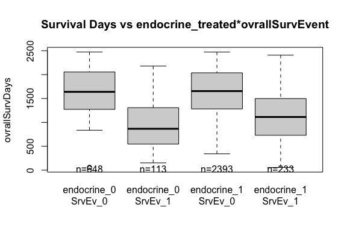

This package contains data from NCBI GEO Series GSE96058. 3,678 patients with breast cancer (BC) were studied. For 405 tumors, a comprehensive multi-rater histopathologic evaluation was performed. Using RNA-seq data, single-gene classifiers and multigene classifiers (MGCs) were trained on consensus histopathology labels. Trained classifiers were tested on a prospective population-based series of 3,273 BCs that included a median follow-up of 52 months (Sweden Cancerome Analysis Network—Breast
SCAN − B
, ClinicalTrials.gov identifier: NCT02306096), and results were evaluated by agreement statistics and Kaplan-Meier and Cox survival analyses. See Brueffer et al. (2018)
$$[1](#ref-Brueffer:2018aa)$$
for a detailed report of the findings.
User notes
The data in NCBI GEO Series GSE96058 does not contain any of the training samples discussed in the Brueffer et al. (2018)
$$[1](#ref-Brueffer:2018aa)$$
paper. This package therefore only contains samples from the prospective population-based series of 3,273 BCs.-
The gene expression data are stored in several tables due to github file size restrictions:
- featureCount_repl1, featureCount_repl2: 30865 x 136 tables of counts for replicated samples
- featureCount_sub1-_sub5: 30865 x 626-629 tables of counts for random subsets of samples, balanced over pam scores.
We use
featureCountalthough the gene coverage measures stored in the GEO data set areFPKMestimates of gene expression.
Installation
# install.packages("devtools") devtools::install_github("12379Monty/GSE96058")
Data sets
|
Item |
Title |
|---|---|
|
data_processing |
A data frame with one column describing data processing in GSE96058 |
|
featureCount_repl1 |
A matrix of feature counts for replicated samples - replicate 1 |
|
featureCount_repl2 |
A matrix of feature counts for replicated samples - replicate 2 |
|
featureCount_sub1 |
A matrix of feature counts for a random subset of samples balanced according to pam50 category |
|
featureCount_sub2 |
A matrix of feature counts for a random subset of samples balanced according to pam50 category |
|
featureCount_sub3 |
A matrix of feature counts for a random subset of samples balanced according to pam50 category |
|
featureCount_sub4 |
A matrix of feature counts for a random subset of samples balanced according to pam50 category |
|
featureCount_sub5 |
A matrix of feature counts for a random subset of samples balanced according to pam50 category |
|
genes_annot |
A data frame describing the features |
|
sampDesc |
A data frame describing the samples in the GSE96058 dataset |
Data Processing
The data processing step descriptions were extracted from the sample table in the GSE96058 dataset and stored as a separate data from in the GSE96058 data package; data_processing
library(GSE96058) knitr::kable(data_processing, row.names=F) %>% kableExtra::kable_styling(full_width = F)
|
GSE96058_Data_Processing |
|---|
|
Base-calling using manufacturer’s on-instrument software. |
|
Demultiplexing was done with Picard versions 1.120 or 1.128. IlluminaBasecallsToFastq parameters used were ADAPTERS_TO_CHECK=INDEXED, ADAPTERS_TO_CHECK=PAIRED_END, INCLUDE_NON_PF_READS=false |
|
Filtering to remove reads that align (using Bowtie 2 with default parameters except -k 1 –phred33 –local) to ribosomal RNA/DNA (GenBank loci NR_023363.1, NR_003285.2, NR_003286.2, NR_003287.2, X12811.1, U13369.1), phiX174 Illumina control (NC_001422.1), and sequences contained in the UCSC RepeatMasker track (downloaded March 14, 2011). |
|
Fragment size distribution (mean and width) for the alignment step was estimated for each sample using bowtie2 2.2.3 and 2.2.5. Parameter set during estimation were -fr, -k 1, –phred33, –local, and -u 100000, using human genome assembly GRCh38. |
|
Remaining reads were aligned using TopHat2 2.0.12 or 2.0.13 (default parameters except for –mate-inner-dist X (estimated in previous step), –mate-std-dev Y (estimated in previous step), –library-type fr-firststrand, –no-coverage-search, –max-insertion-length 20, –max-deletion-length 20, –read-gap-length 20, –read-edit-dist 22) to the human genome reference GRCh38 together with 104,133 transcript annotations from the UCSC knownGenes table (downloaded September 22, 2014). |
|
Gene expression data in FPKM were generated using cufflinks 2.2.1 (default parameters except –GTF, –frag-bias-correct GRCh38.fa, –multi-read-correct, –library-type fr-firststrand, –total-hits-norm, –max-bundle-frags 10000000). The resulting data was was post-processed by collapsing on 30,865 unique gene symbols (sum of FPKM values of each matching transcript), adding to each expression measurement 0.1 FPKM, and performing a log2 transformation. |
|
PAM50 subtyping was performed using an implementation of the Parker method (Parker et al., J.Clin Oncol 2009). In short, to avoid context dependency when assigning PAM50 subtype by nearest-centroid, a fixed reference was selected to match the original cohort used by Parker et al. with respect to available clinical characteristics. Before subtyping tumors in this study, gene expression of the PAM50 genes for each tumor was centered to the reference set separately using custom R scripts. |
|
Single-gene classifiers (SGCs) and multi-gene classifiers (MGCs) were trained for ER, PgR, HER2, Ki67 (SGC and MGC) and NHG (MGC only) on the expression of the single underlying gene (ESR1, PGR, ERBB2 or MKI67) or multiple genes (5000 most varying genes across all samples) of a 405 sample cohort using consensus pathology scores as labels. Classifier training was performed by selecting expression thresholds that maximize prediction concordance to the consensus scores (SGCs) and nearest shrunken centroids using the pamr R package (MGCs). The classifiers were used to predict the biomarker status in a validation cohort of 3273 samples from patients enrolled in the SCAN-B study. |
|
Genome_build: Human genome reference GRCh38/hg38. |
|
Supplementary_files_format_and_content: Gene expression in FPKM in CSV format. |
Examples
ER/PR/HER2 status
To identify breast cancer associated read-through fusion transcripts, Varley et al. (2014)
$$[2](#ref-Varley:2014aa)$$
analyzed the paired-end RNA-seq data from of 168 breast samples, including 28 breast cancer cell lines, 42 triple negative breast cancer primary tumors, 42 estrogen receptor positive breast cancer primary tumors, and 56 non-malignant breast tissue samples. Data are deposited in GEO GSE58135Analyzing this dataset Li et al. (2018)
$$[3](#ref-Li:2018aa)$$
identified 797 DEGs uniquely expressed in triple negative BC (TNBC) and 1403 DEGs uniquely expressed in estrogen positive and HER2 negative BC (ER+HER2-BC).
This dataset has a limited number of TNBC and ER+HER2-BC that could be examined to verify the findings in Li et al. (2018)
$$[3](#ref-Li:2018aa)$$
.
library(magrittr) library(GSE96058) ER_PR_HER2_tbl <- t(t(with(sampDesc %>% dplyr::filter(!isRepl), table(ER_PR_HER2=paste(er_Status, pgr_Status, her2_Status, sep='_'), exclude=NULL) ))) knitr::kable(t(t(ER_PR_HER2_tbl)), caption="ER, PR and HER2 Status") %>% kableExtra::kable_styling(full_width = F)
|
0_0_0 |
143 |
|
0_0_1 |
56 |
|
0_0_NA |
12 |
|
0_1_0 |
22 |
|
0_1_1 |
6 |
|
0_1_NA |
1 |
|
0_NA_1 |
1 |
|
1_0_0 |
126 |
|
1_0_1 |
44 |
|
1_0_NA |
5 |
|
1_1_0 |
2198 |
|
1_1_1 |
232 |
|
1_1_NA |
90 |
|
1_NA_0 |
101 |
|
1_NA_1 |
34 |
|
1_NA_NA |
2 |
|
NA_1_0 |
2 |
|
NA_1_1 |
3 |
|
NA_NA_0 |
139 |
|
NA_NA_1 |
44 |
|
NA_NA_NA |
12 |
ER status vs predicted value
- The GSE58135 dataset contains single gene and multi gene predictors of ER/PR/HER2/ki67 status:
- er_Status, her2_Status, ki67_Status, pgr_Status
- er_SGC, her2_SGC, ki67_SGC, pgr_SGC
- er_MGC, her2_MGC, ki67_MGC, nhg_MGC, pgr_MGC
SGC_tbl <- with(sampDesc, table(er_Status, er_SGC) ) dimnames(SGC_tbl)[[1]] <- paste0('ER=', dimnames(SGC_tbl)[[1]]) MGC_tbl <- with(sampDesc, table(er_Status, er_MGC) ) dimnames(MGC_tbl)[[1]] <- paste0('ER=', dimnames(MGC_tbl)[[1]]) knitr::kable(SGC_tbl, caption='ER Status - SGC Predictions') %>% kableExtra::kable_styling(full_width = F)
|
0 |
1 |
|
|---|---|---|
|
ER=0 |
192 |
62 |
|
ER=1 |
65 |
2870 |
|
ER=NA |
137 |
83 |
knitr::kable(MGC_tbl, caption='ER Status - MGC Predictions') %>% kableExtra::kable_styling(full_width = F)
|
0 |
1 |
|
|---|---|---|
|
ER=0 |
242 |
12 |
|
ER=1 |
246 |
2689 |
|
ER=NA |
205 |
15 |
Similarly for PGR, HER2 and ki67.
Treatment and survival.
- The GSE58135 dataset contains treatment and survival data
###, fig.cap="Survival Days vs chemo_treated*ovrallSurvEvent"} chemo_surv_lst <- with(sampDesc %>% dplyr::filter(chemo_treated %in% c('0','1')), split(ovrallSurvDays, paste0('chemo_',chemo_treated, '\nSrvEv_', ovrallSurvEvent)) ) boxplot(chemo_surv_lst, ylab='ovrallSurvDays') title("Survival Days vs chemo_treated*ovrallSurvEvent")
Can similarly examine survival vs endocrine_treated.
###, fig.cap="Survival Days vs endocrine_treated*ovrallSurvEvent",eval=F, echo=F} endocrine_surv_lst <- with(sampDesc %>% dplyr::filter(endocrine_treated %in% c('0','1')), split(ovrallSurvDays, paste0('endocrine_',endocrine_treated, '\nSrvEv_', ovrallSurvEvent)) ) boxplot(endocrine_surv_lst, ylab='ovrallSurvDays') title("Survival Days vs endocrine_treated*ovrallSurvEvent")

PAM50 subtyping
- GSE96058 has PAM50 subtypung information - see data processing above. Samples were distributed across different count tables in order to meet github file size constraints. This allocation was done to keep the PAM50 score distribution constant.
###, fig.cap="Sapmple PAM subtype vs Count Table" } pam50_byTable_tbl <- with(sampDesc, table(pam50_subtype, countTable)) barplot(pam50_byTable_tbl, beside=T, legend=T, args.legend=list(x='topleft')) title("Sample PAM subtype by subset")
Let’s examine how counts cluster for one of the subsets.
First look at coverage, ordered by sample ID (sometimes a proxy for processing time effects)
###, fig.cap="Coverage for repl1 samples ordered by bioSample ID"} KellyColors.vec <- c( "#222222", "#F3C300", "#875692", "#F38400", "#A1CAF1", "#BE0032", "#C2B280", "#848482", "#008856", "#E68FAC", "#0067A5", "#F99379", "#604E97", "#F6A600", "#B3446C", "#DCD300", "#882D17", "#8DB600", "#654522", "#E25822", "#2B3D26" ) col_vec <- KellyColors.vec pamVal_vec <- with(sampDesc, unique(pam50_subtype)) pamCol_vec <- col_vec[1:length(pamVal_vec)] names(pamCol_vec) <- pamVal_vec sampDesc_repl1 <- sampDesc[match(colnames(featureCount_repl1), sampDesc$title),] o.v <- order(sampDesc_repl1$bioSample) sampDesc_repl1 <- sampDesc_repl1[o.v,] featureCount_repl1 <- featureCount_repl1[, o.v] rm(o.v) par(mfrow = c(1, 1), mar = c(2, 2, 2, 4), oma = c(0, 1, 4, 2)) # AqNPATisMix outline=T for LBO boxplot(featureCount_repl1, add = F, ylim = c(-4, 4), staplewex = 0, # remove horizontal whisker lines staplecol = "white", # just to be totally sure outline = F, # remove outlying points whisklty = 0, # remove vertical whisker lines las = 2, horizontal = F, xaxt = "n", border = pamCol_vec[sampDesc_repl1$pam50_subtype]) title("Coverage for repl1 samples ordered by bioSample ID") legend('top', text.col=pamCol_vec, legend=names(pamCol_vec), bty='n', horiz=T)
###, fig.cap="Coverage densities for repl1 samples"} par(mfcol = c(1, 1), mar = c(2, 2, 1, 1), oma = c(0, 3, 2, 0)) plot(density(featureCount_repl1[, 1]), col = pamCol_vec[sampDesc_repl1$pam50_subtype[1]], lty = 1, lwd = 2, xlim = c(-4, 7), ylim = c(0, .4), las = 2, main = "", xlab = "" ) title("Coverage densities for repl1 samples") for (JJ in 2:ncol(featureCount_repl1)) { den <- density(featureCount_repl1[, JJ]) lines(den$x, den$y, col = pamCol_vec[sampDesc_repl1$pam50_subtype[JJ]], lty = 1) } legend('top', text.col=pamCol_vec, legend=names(pamCol_vec), bty='n', horiz=T)
FPKM of zero looks like a good place to separate expressed from weakly expressed genes. Apply this filter, requiring at a gene to be epxressed beyond this nominal value in at least 10 samples to be considered for this analysis.
### , fig.cap="Filtered Coverage for repl1 samples orderd bi bioSample ID"} weak.flg <- rowSums(featureCount_repl1 > 0) < 10 cat("Excluding", round(100*mean(weak.flg),1), "percent of genes.\n") #> Excluding 44.5 percent of genes. cat(sum(!weak.flg), 'genes kept for analysis.\n') #> 17115 genes kept for analysis. par(mfrow = c(1, 1), mar = c(2, 2, 2, 4), oma = c(0, 1, 4, 2)) # AqNPATisMix outline=T for LBO boxplot(featureCount_repl1[!weak.flg,], add = F, ylim = c(-1, 5), staplewex = 0, # remove horizontal whisker lines staplecol = "white", # just to be totally sure outline = F, # remove outlying points whisklty = 0, # remove vertical whisker lines las = 2, horizontal = F, xaxt = "n", border = pamCol_vec[sampDesc_repl1$pam50_subtype]) title("Filtered Coverage for repl1 samples ordered by bioSample ID") legend('top', text.col=pamCol_vec, legend=names(pamCol_vec), bty='n', horiz=T)
### , fig.cap='MDS plots filtered coverage in repl1 samples', echo=T} par(mfcol = c(1, 2), mar = c(4, 4, 2, 1), xpd = NA, oma = c(0, 0, 2, 0)) MDS.out <- limma::plotMDS(featureCount_repl1[!weak.flg,], col = pamCol_vec[sampDesc_repl1$pam50_subtype], pch=1 ) MDS.out <- limma::plotMDS(featureCount_repl1[!weak.flg,], col = pamCol_vec[sampDesc_repl1$pam50_subtype], pch=1, dim.plot = 3:4 ) mtext(outer=T, side=3, "MDS plots filtered coverage in repl1 samples - Col = pam50_subtype")

We see some association with pam subtype, but no strong clustering in this display.
Package page
Please note that the ‘GSE96058’ project is released with a Contributor Code of Conduct. By contributing to this project, you agree to abide by its terms.
References
1. Brueffer, C., Vallon-Christersson, J., Grabau, D., Ehinger, A., Häkkinen, J., Hegardt, C., Malina, J., Chen, Y., Bendahl, P.-O., and Manjer, J. et al. Clinical value of rna sequencing-based classifiers for prediction of the five conventional breast cancer biomarkers: A report from the population-based multicenter sweden cancerome analysis network-breast initiative. JCO precision oncology 2, PO.17.00135. Available at: https://pubmed.ncbi.nlm.nih.gov/32913985.
2. Varley, K.E., Gertz, J., Roberts, B.S., Davis, N.S., Bowling, K.M., Kirby, M.K., Nesmith, A.S., Oliver, P.G., Grizzle, W.E., and Forero, A. et al. (2014). Recurrent read-through fusion transcripts in breast cancer. Breast Cancer Research and Treatment 146, 287–297. Available at: https://doi.org/10.1007/s10549-014-3019-2.
3. Li, X., Rouchka, E.C., Brock, G.N., Yan, J., O’Toole, T.E., Tieri, D.A., and Cooper, N.G.F. A combined approach with gene-wise normalization improves the analysis of rna-seq data in human breast cancer subtypes. PloS one 13, e0201813–e0201813. Available at: https://www.ncbi.nlm.nih.gov/pubmed/30089167.